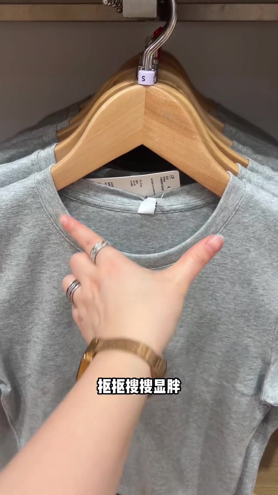
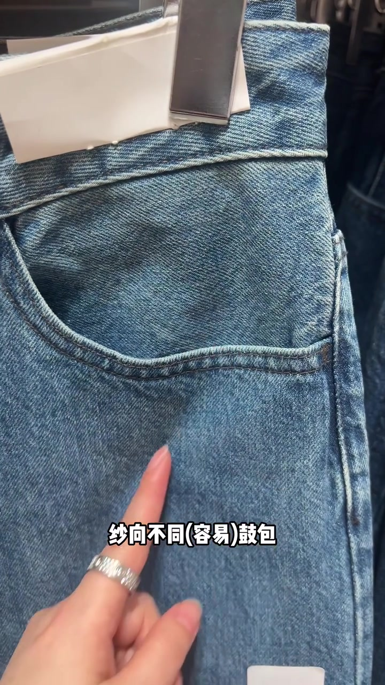
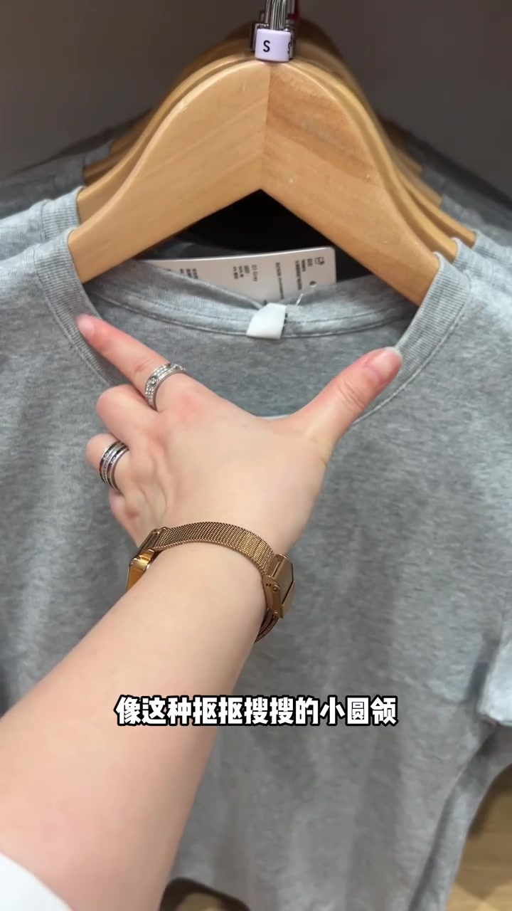
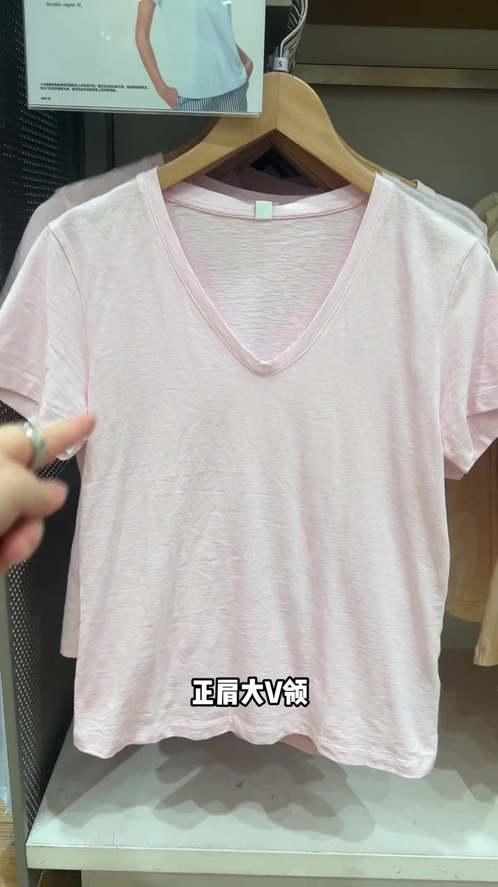
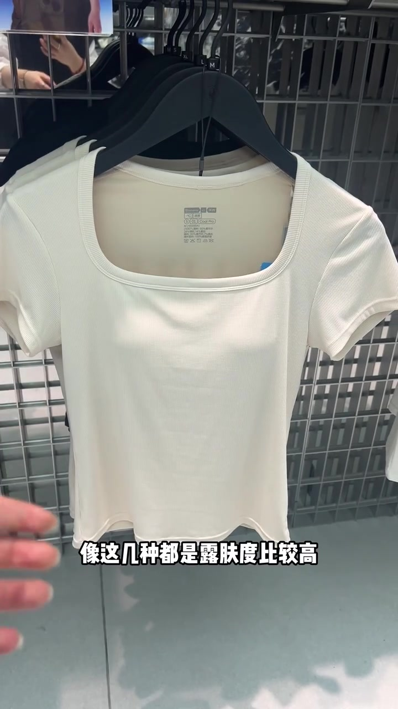
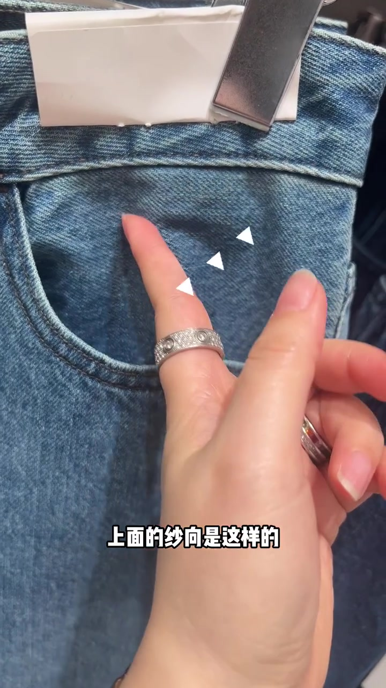
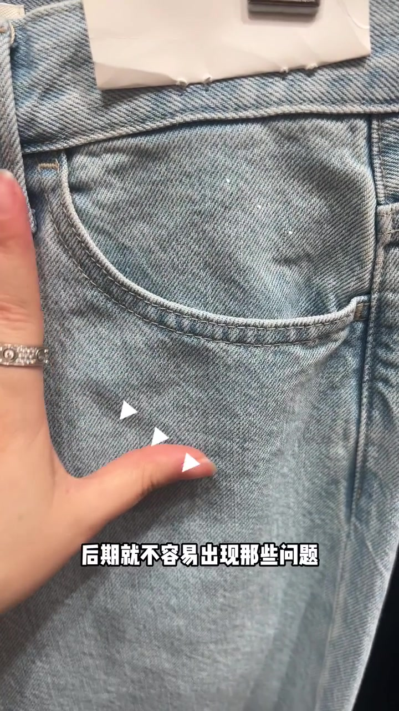
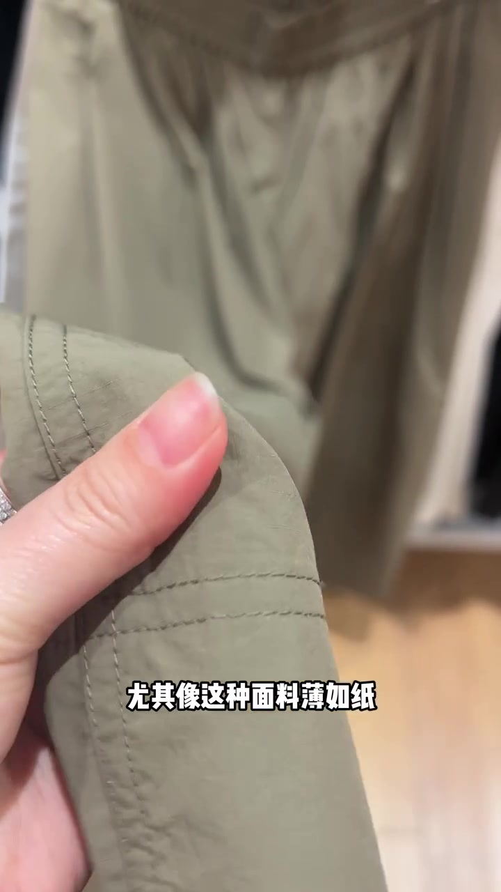

开场：抠抠搜搜显胖，大大方方显瘦
镜头先落在灰色小圆领 T 恤上，叠字直接打出“抠抠搜搜显胖”；紧接着切到牛仔裤口袋，用纱向不同／相同对照鼓包风险。
整条视频几乎没有闲聊，主题是两套对照：领口裁切够不够大方，以及面料纱向是否一致。作者立场很明确——抠门的领口既热又显胖，大方的领型更凉快显瘦。
可见字幕校正：Whisper 把「抠抠搜搜／大大方方／纱向／鼓包／小圆领／露肤度／正肩大 V 领／正肩方领／洗涤／缩率／速干裤慎选／刺啦啦」听成音近字。下文按画面字幕与服装结构叙述，文末转录区仍保留原始分段。


领型实测：小圆领闷热显粗，正肩大领凉快显瘦
回到那件灰色小圆领。主讲人用手比出领口开口偏紧，字幕写“像这种抠抠搜搜的小圆领”——露肤度低、又热，还显得脖子粗。这是作者在货架上的现场判断，不是实验室数据。
随后依次点名三类更“大方”的领型：正肩大圆领、正肩大 V 领、正肩方领。粉红大 V 与白色方领依次入镜，结论叠字写得很硬：这几种露肤度比较高，凉快、显瘦。



牛仔裤纱向：现在平，洗多次后才会鼓包
镜头切回牛仔裤口袋。主讲人说这块现在看起来是平的，但多次洗涤之后，就会形成鼓包或者跑偏。手指在口袋上方比出斜向纱线，画面用虚线标出“上面的纱向是这样的”“下面的纱向是那样的”。
逻辑链条很短：纱向不同 → 缩率方向不同 → 后期必然出问题。因此要选纱向一致的，后期才不容易鼓包。这是可观察的工艺证据，不是品牌站台。
作者立场：纱向一致不等于永远不变形，只是比纱向错乱更不容易在洗涤后鼓包。


速干裤慎选：薄如纸、刺啦响，出汗就透
最后一段换到橄榄绿薄裤。主讲人捏起面料说“薄如纸”，摸上去是刺啦啦的声音——典型的轻薄化纤手感。字幕与口播警告：速干裤慎选；只要出汗，它的显示度……来看图，自行感受。
这里没有给出实验室透光数据，而是把判断留给画面：薄、响、出汗后容易显形。读者应把它理解成作者的现场避坑，而不是“所有速干裤都不能买”。
